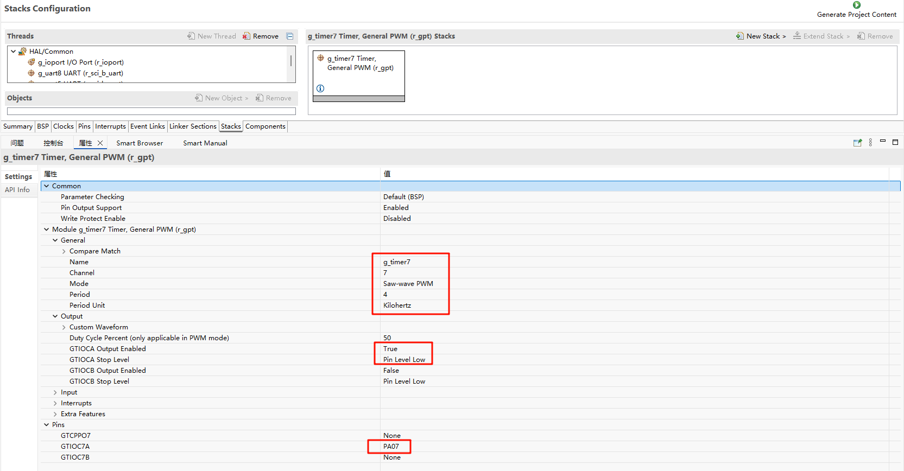
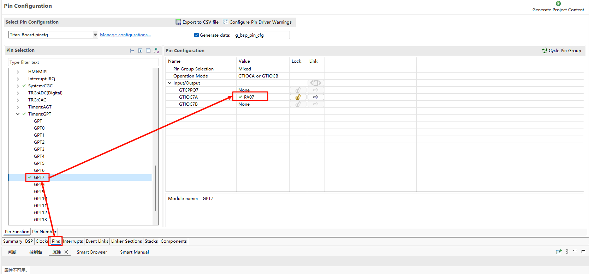
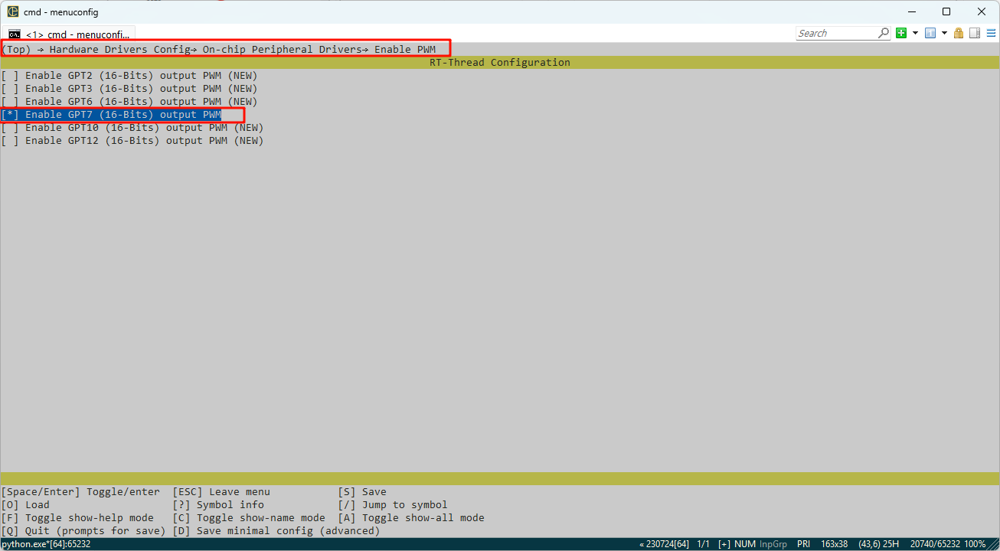

RA8P1 Titan Board GPT Usage Guide
English | Chinese
Introduction
In our specific application scenarios, the use of timers is often indispensable. This example mainly introduces how to use the GPT device on the Titan Board.
FSP Configuration Instructions
The FSP is configured to enable GPT7 as a PWM mode:

Additionally, the pins for GPT7 are enabled:

In the configuration, enable PWM7:

Example Project Instructions
The source code for this example is located in /projects/Titan_basic_buzzer/src/buzzer.c：
#include <rtthread.h>
#include <rtdevice.h>
#define PWM_DEV_NAME "pwm7" /* PWM设备名称 */
#define PWM_DEV_CHANNEL 0 /* PWM通道 */
struct rt_device_pwm *pwm_dev;
typedef struct
{
uint16_t freq; // 频率Hz
uint16_t duration; // 持续时间ms
} note_t;
note_t song[] =
{
{262,400}, {294,400}, {330,400}, {262,400}, // 1 2 3 1
{262,400}, {294,400}, {330,400}, {262,400}, // 1 2 3 1
{330,400}, {349,400}, {392,800}, // 3 4 5
{330,400}, {349,400}, {392,800}, // 3 4 5
{392,200}, {440,200}, {392,200}, {349,200}, {330,400}, {262,400}, // 5 6 5 4 3 1
{392,200}, {440,200}, {392,200}, {349,200}, {330,400}, {262,400}, // 5 6 5 4 3 1
{262,400}, {196,400}, {262,400}, {0,400}, // 1(低) 7(低) 1 高 休止
{262,400}, {196,400}, {262,400}, {0,400}, // 1 7 1 休止
};
static int buzzer_test(void)
{
pwm_dev = (struct rt_device_pwm *)rt_device_find(PWM_DEV_NAME);
if (!pwm_dev)
{
rt_kprintf("Cannot find PWM device %s\n", PWM_DEV_NAME);
return -1;
}
for (size_t i = 0; i < sizeof(song)/sizeof(song[0]); i++)
{
if (song[i].freq == 0)
{
rt_pwm_disable(pwm_dev, PWM_DEV_CHANNEL);
}
else
{
uint32_t period_ns = 1000000000 / song[i].freq; // ns
uint32_t pulse_ns = period_ns / 2; // 50%
rt_pwm_set(pwm_dev, PWM_DEV_CHANNEL, period_ns, pulse_ns);
rt_pwm_enable(pwm_dev, PWM_DEV_CHANNEL);
}
rt_thread_mdelay(song[i].duration);
}
rt_pwm_disable(pwm_dev, PWM_DEV_CHANNEL);
return 0;
}
MSH_CMD_EXPORT(buzzer_test, Play song on buzzer);
Compilation & Download
RT-Thread Studio: Download the Titan Board resource package in the RT-Thread Studio package manager, then create a new project and compile it.
After compilation, connect the development board’s Jlink interface to the PC, and download the firmware to the development board.
Running Results
In the serial terminal, input buzzer_sample to see the specific results, and the buzzer will emit a melody.